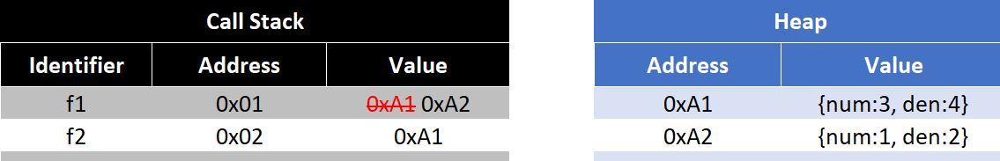
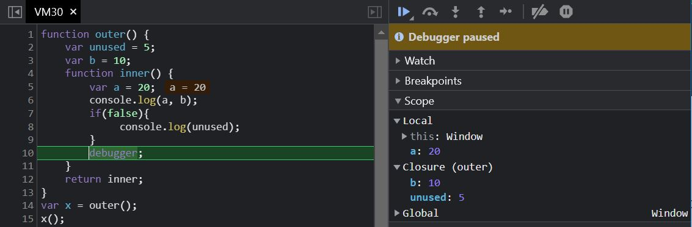

JavaScript Memory Management
In this chapter we'll cover how JavaScript variables are stored in memory. How scope works and what happens when a variable falls out of scope. We'll look at higher order functions and how JavaScript facilitates their use. Finally we'll cover closures and how JavaScript breaks some conventions about scope.
These notes have so many holes in them, they might be considered swiss cheese. The concepts are difficult to translate to still images, and while I try my best; losing the order in which cells are added makes these notes very difficult to follow. They are meant as a supplement for attending class, not a replacement
Call Stack and Heap
JavaScript like most other languages, stores it's data in two places during execution. The (call) stack and the heap. Things that have fixed sizes are allocated on the stack. In JS this mostly refers to primitives ‡
The heap is used to store all dynamically allocated variables: objects (including functions)
‡ Strings technically don't follow this convention under the hood, but through implementation magic we can treat them as if they are fixed size.
Case 1
xxxxxxxxxxlet n1 = 31;let n2 = n1;n1 = 32;console.log(n2); // Does this print 31 or 32?
We can see primitive types treat assignment as pass by value, a new memory address is created and the value is copied over.
Case 2
xxxxxxxxxxlet f1 = {num:3, den:4};let f2 = f1;f1 = {num:1, den:2};console.log(f2); // Does this print {num:3, den:4} or {num:1, den:2}?

Pass By Copy of a Reference
JavaScript uses pass by Copy of a Reference (also called: call by sharing)
This is effectively pass by value, with the added caveat that objects are stored on the call stack as pointers to the heap.
When you copy a object, you are passing the memory address as the value.
Case 3
xxxxxxxxxxlet f1 = {num:3, den:4};let f2 = f1;f1.num = 1;f1.den = 2;console.log(f2); // Does this print {num:3, den:4} or {num:1, den:2}?
Both f1 and f2 are referencing the same object on the heap. Any changes made by f1 also effect f2
This is contrast to Case 2, where a new object is created (right hand side evaluation is when the object is added to the heap) and that heap address is assigned to the value of f1.
Case 4
x
let f1 = {num:3, den:4};let f2 = f1;f1.toDecimal = function(){return this.num / this.den};
console.log(f2.toDecimal()); // Does this work?
Functions are just a specialized object. It gets stored on the heap like any other object.
Case 5
x
let f1 = {num:3, den:4, toDecimal:function(){return this.num / this.den}};Largely the same, but the inner object toDecimal is evaluated first.
Copying an Object (Shallow Copy)
Copying objects by assignment copies the reference:
If instead if we want each of the values to be independent, we can create a new object and populate it with the same property value pairs using the spread operator.
x
let f1 = {num:3, den:4};let f2 = {f1};f1.num = 1;f1.den = 2;console.log(f1);console.log(f2);{...f1} evaluates to {...0xA1} evaluates to {...{num:3, den:4}} evaluates to {num:3, den:4}
This value gets stored into 0xA2 which is finally assigned to the value of f2
Case 5
x
let f1 = {num:3, den:4, inverse:{num:4, den:3}};let f2 = {f1};f1.num = 1;f1.den = 2;f1.inverse.num = 2;f1.inverse.den = 1;
console.log(f2); // What does this print out? (tricky)Limitations
This is called a shallow copy because it only works as a copy by value for objects that do not have other objects nested inside it. If we have a nested objects the reference to the nested object is copied over.
Deep Copy (Clone)
Not really important to us, but here are two solutions to create a deep copy function.
Hacking JSON (Legacy Solution)
The quickest solution prior to 2022 was a combination of JSON.stringify to turn an object into a JSON string followed immediately by JSON.parse to turn it back into an object. You will see this very often.
xxxxxxxxxxconst deepCopy = o => JSON.parse(JSON.stringify(o));
let f1 = {num:3, den:4, inverse:{num:4, den:3}};let f2 = deepClone(f1);
f1.num = 1; f1.den = 2;f1.inverse.num = 2;f1.inverse.den = 1;console.log(f1);console.log(f2);Aside from obvious inefficiencies, there were several problems with this including the fact that JSON only supports simple key value pair objects and arrays. It doesn't support complex objects like Functions and Binary data (which get dropped), and other unsupported types like Dates are converted to strings, which don't convert back to Dates during the deserialization process.
Structured Clone
Recent Addition 2022. Might not be available in all browsers. Should be fine server side.
https://developer.mozilla.org/en-US/docs/Web/API/structuredClone
xxxxxxxxxxlet f1 = {num:3, den:4, inverse:{num:4, den:3}};let f2 = structuredClone(f1);
f1.num = 1;f1.den = 2;f1.inverse.num = 2;f1.inverse.den = 1;console.log(f1);console.log(f2);
Scopes
Scope determines the accessibility of variables. In JavaScript we have 4 different types of scope.
We will be interested in 3 of these: Global, Function, and Block Scope
Note scope in a browser works slightly differently so these rules only apply to Node.js
Global scope
In Node.js variables defined without a let, const, or var are global.
xxxxxxxxxxfunction scope(){ x = 10;}scope();console.log(x); // 10
With global scope, once a variable is declared as global, it can be used anywhere in the program. (Including in separate files)
xxxxxxxxxx// file1.jsx = 10;xxxxxxxxxx// file2.jsrequire("./file1.js"); // Node.js: Run all code in file1 then return hereconsole.log(x); // 10
Using Global scope is generally considered bad practice and should be avoided for most developers except to development related to implementations of the language itself (eg. when working on a browser feature or contributing code to the Node.js project, you want those new functions available to all developers so you would put them in the global namespace)
The problem with global variables is they cause namespace pollution, preventing the usage of specific variable names in a file. In Node.js If you want to import variables from another file there are more appropriate ways like module.export.
Exporting file
xxxxxxxxxx// file1.jsmodule.exports = {data1, data2, function1, function2};Importing file
xxxxxxxxxx// file2.jslet {data1, data2, function1, function2} = require("./file1.js")
Function Scope
In Node.js variables declared with the var keyword have function scope. These variables are scoped to the function they are defined inside.
x
function myfunc(a){ var x = 10; return a + x;}var y = myfunc(5);console.log(a); // Error: a is not definedconsole.log(x); // Error: x is not defined
When myfunc(5) is called a new stack frame is added. This stack frame is removed when the function returns freeing the memory.
What are Stack Frames:
Top Level Function Scope
If variables are defined on the top level of the program they are scoped to the file
xxxxxxxxxx// file1.jsrequire("./file2.js");console.log(x); // Error: x is not definedxxxxxxxxxx// file2.jsvar x = 10;Nesting Scope
In JavaScript both Function and Lexical Scope nests, inner functions can access the outer functions variables, but not the reverse.
xxxxxxxxxxvar x = 10;function scope(){ var y = 20; function nestedScope(){ var z = 30; console.log(x,y,z); // 10, 20 ,30 } nestedScope(); // console.log(x,y,z); // Error: z is not defined}scope();// console.log(x,y); // Error: y is not definedHoisting
Why does the following code prints undefined,
xxxxxxxxxxfunction myfunc(){ if(false){ var x = 10; } console.log(x); // undefined}myfunc();But this one Errors?
xxxxxxxxxxfunction myfunc(){ if(false){
} console.log(x); // ReferenceError: x is not defined}myfunc();Function scoped variables have their declarations (not assignments) moved to the top of the function in which they are defined (or for top level scoped variables the top of the file) through a process called hoisting. The first block of code is equivalent to the following:
xxxxxxxxxxfunction myfunc(){ var x; if(false){ x = 10; } console.log(x); // undefined}myfunc();The second block has no declaration to hoist and using the undeclared x causes the reference error.
Only function scoped variable have this hoisting property.
xxxxxxxxxxconsole.log(x); // undefinedvar x = 10;console.log(y); // Error: y is not definedlet y = 20;
Block (Lexical) Scope – Recommended
Variables declared with the let or const keyword have block (also called lexical) scope. These variables are scoped to the block (set of curly braces) in which they are defined.
This includes if, for, while, function, switch/case and more!
xxxxxxxxxxfunction myfunc(){ if(true){ var x = 10; } console.log(x); // ReferenceError: x is not defined}myfunc();
xxxxxxxxxx{ var x = 10; let y = 20;}console.log(x); // 10console.log(y); // Error: y is not definedTechnically you can have scope operators in JS without anything else, but there's rarely a reason to use it.
Higher Order Functions
Higher order functions are functions that either take a function as it's input (examples include the Array class's map() and filter() methods) or functions that return a function as it's output.
For this topic we are interested in the latter:
xxxxxxxxxxfunction outer(a){ let b = 20; let unused = 50; return function inner(c){ let d = 40; return `${a},${b},${c},${d}`; }}
let i = outer(10);let j = i(30);console.log(j);The call to outer(10) returns a function inner which we then store in variable i
When we then call i(30) we can see that the function inner uses all four variables a,b,c, and d.
Closures
The ability to preserve inner's access to both a and b is called a closure.
Specifically in this example:
The function inner closes over variables a and b (preserving our access to them even after function outer is no longer in scope)
The green region in the image above represents the closure.
Because variable unused was not used by function inner() the closure does not preserve that variable and it is subject to garbage collection.
In the underlying memory management code, each variable has a reference counter specifying how many functions depend on this variable. That number goes up if a new function uses that variable and down if a function goes out of scope. As long as a variables reference count is above zero, the garbage collection process skips over it when looking for places where memory can be recouped.
We are returned a refence to the function inner,
There is no way for us to directly interact with variables a, b, but they still exist, for inner to function this must be the case..
Looking at Closures
Browser gives us a tool to look at the scope of variables via the debugger keyword.
x
function outer() { var unused = 5; var b = 10; function inner() { var a = 20; console.log(a, b); debugger; } return inner;}var x = outer(); x();

We can see access to variable b is preserved by the closure created by inner, but because variable unused is not being used by inner it is not included in this list and is a candidate for garbage collection as it falls out of scope with no closure preserving it.
x
function outer() { var unused = 5; var b = 10; function inner() { var a = 20; console.log(a, b); if(false){ console.log(unused); } debugger; } return inner;}var x = outer(); x();
v8's implementation only checks to see if the variable (unused) is ever referenced inside the enclosing function, not if it's ever actually used. Notice unused is not optimized away here.

The not function
Input: a function that returns a boolean
Returns: A new function that returns true for every input the original function returned false, and false for every input the original returned true.
x
function not(func){ return (args) => !func(args);}
let is_even = x => x % 2 == 0;let is_odd = not(is_even);console.log("Is 41 Odd?", is_odd(41));console.log("Is 42 Odd?", is_odd(42));
console.log("Is 420.69 an Integer?", Number.isInteger(420.69)); //Built in functionconst isNotInteger = not(Number.isInteger);console.log("Is 420.69 not an Integer?", isNotInteger(420.69));
Case 6
It looks like is_odd depends on both not and is_even, what happens if I remove their definitions?
x
function not(func){ return (args) => !func(args);}
let is_even = x => x % 2 == 0;let is_odd = not(is_even);is_even = null;not = null;
console.log("Is 41 Odd?", is_odd(41)); // Will this work?
When the not function is called a new function (...args) => !func(...args) is created.
This function maintains a reference to func using it's closure.
func points to the heap address of is_even allowing this function to continue to access it even after the identifier on the stack is nulled.
A closure is the combination of a function bundled together (enclosed) with references to its surrounding state (the lexical environment). In other words, a closure gives you access to an outer function’s scope from an inner function. In JavaScript, closures are created every time a function is created, at function creation time.
https://developer.mozilla.org/en-US/docs/Web/JavaScript/Closures
Special Case - for(let)
In JavaScript these two loops are different.
xxxxxxxxxx// Loop A{ let i; for(i = 0 ; i < 10 ; i++){ }}xxxxxxxxxx// Loop Bfor(let i = 0 ; i < 10 ; i++){ }In loop A:
A single memory address is allocated for i. This allows us to store a single variable which changes from 0 to 10 as the loop runs.
In loop B:
The first iteration of the loop creates a new variable i and initializes it to 0.
Each subsequent iteration, declares a new variable i (a new memory address is allocated) and assigns it the value of i at the end of the previous iteration (prior to running the increment statement). All future references of i will use the latest version of, but previous versions are still in memory.
To show this, we will borrow a function from our next topic Asynchronous Programming.
setTimeout(func, timeout)
setTimeout is a built in function that takes two inputs func and timeout. It executes func after a minimum of timeout milliseconds has elapsed.
xxxxxxxxxx// Loop A{ let i; for(i = 0 ; i < 10 ; i++){ setTimeout(() => console.log(i), 500); }}console.clear();This will print 10 a total of 10 times (note most browsers will group the output)
x
// Loop Bfor(let i = 0 ; i < 10 ; i++){ setTimeout(() => console.log(i), 500);}console.clear();This will print 0 to 9.
The only way this is possible, is if all previous iterations of i are stored in different memory locations.
The closure created by the function () => console.log(i) allows us to preserve access to each i that was created along the way. This type of behavior is unique to the for(let) loop.
Generally this is the behavior that you want, but a lot of memory magic has to occur to get us there.
What are closures used for?
- Asynchronous Programming (Discussed in the next topic)
- Hiding Private Members
Hiding Private Members (Revealing Module Pattern)
xxxxxxxxxxfunction Dog(n){ let name = n; let age = 0; let inventory = []; function bark(){ console.log(`${name} barks!`); } function birthday(){ console.log(`Happy Birthday ${name}, you are now ${++age}`); } function pickup(thing){ inventory.push(thing); console.log(`${name} picked up a ${thing}!`); display_inventory(); } function display_inventory(){ console.log(`${name} has [${inventory.join(", ")}] in their inventory`); } return {bark, birthday, pickup};}
let sparky = Dog("Sparky");let fluffy = Dog("Fluffy");sparky.birthday();sparky.birthday();fluffy.birthday();sparky.pickup("Bone");sparky.pickup("Chew Toy");fluffy.pickup("Food Bowl");
This syntax should look very similar to class notation.
The most important part is the return statement.
x
return {bark, birthday, pickup};An object containing multiple functions is returned back.
Each time Dog() is called name, age, and inventory, are created, effectively creating instance variables.
Each of the returned functions creates a closure that preserves that functions access to name, age, and inventory if it needs it. This ensures that those properties can be accessed, but only via the returned methods. Effectively working like public/private fields and methods.
Prior to ES6 this was the way to achieve class-like behavior.
Note you cannot put properties (like name and age) in the return object. (Only methods)
This is because the return statement creates a new object and if those properties are primitives, they will be passed by value. (Creating independent variables not connected to the rest of the object)
Instead getters and setter functions are required.